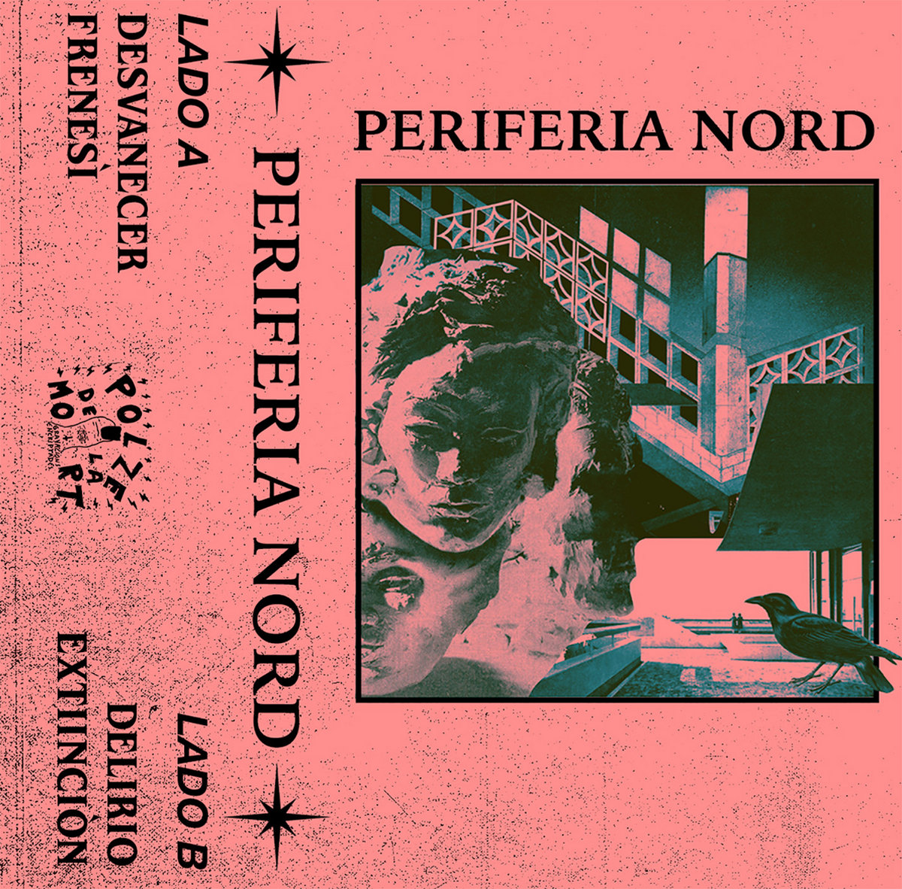
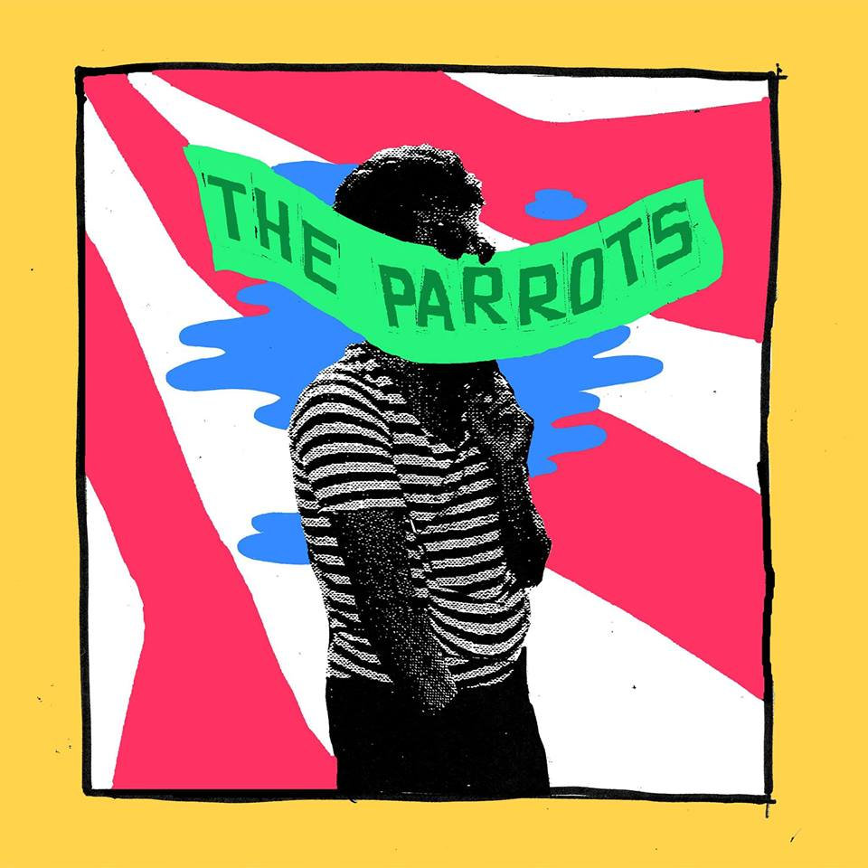
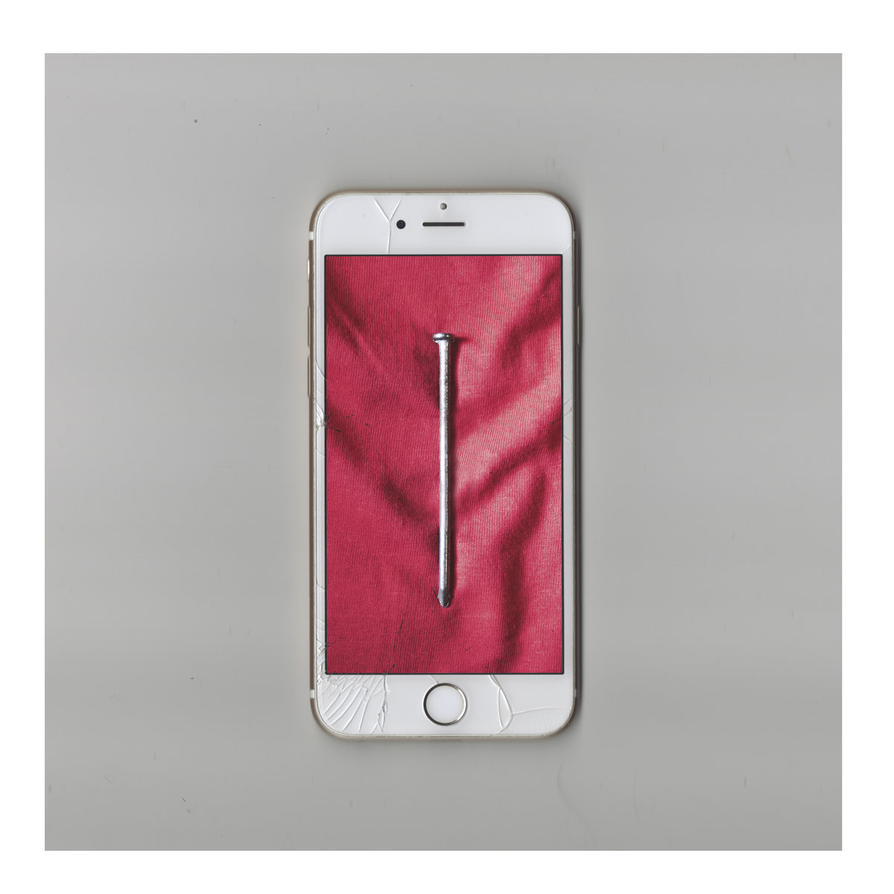

Bandcamp Friday is today, September 5th, 2025. I always like to use these opportunities to both find/support Creative Commons music and thought I'd start sharing some of my picks.
If you're interested in CC music, be sure to checkout the tool I made for finding CC music on BC: cc-bc.

I was randomly browsing through cc-bc links and noticed I was finding a lot of good stuff from Spain, so I thought I'd do a special Spain edition. First up, the self-titled Perifèria Nord. This short EP is dark, upbeat, post-punk goodness complete with dreamy guitars and lush pads over irresistibly danceable drums.

Another short one, Weed For The Parrots reminds me of Bad Kids-era Black Lips - it's uproarious and unbridled fun pulling from the best parts of early punk and the garage revival.

Not having a firm grasp of the Spanish language, I couldn't tell at first if this was the kind of "wolf in sheep's clothing" subtle Christian Rock that plagued my early CD collection. I suppose the "música satánica" tag should have given it away. What's there to say? It's proper punk: fast, loud, and critical of capitalism.